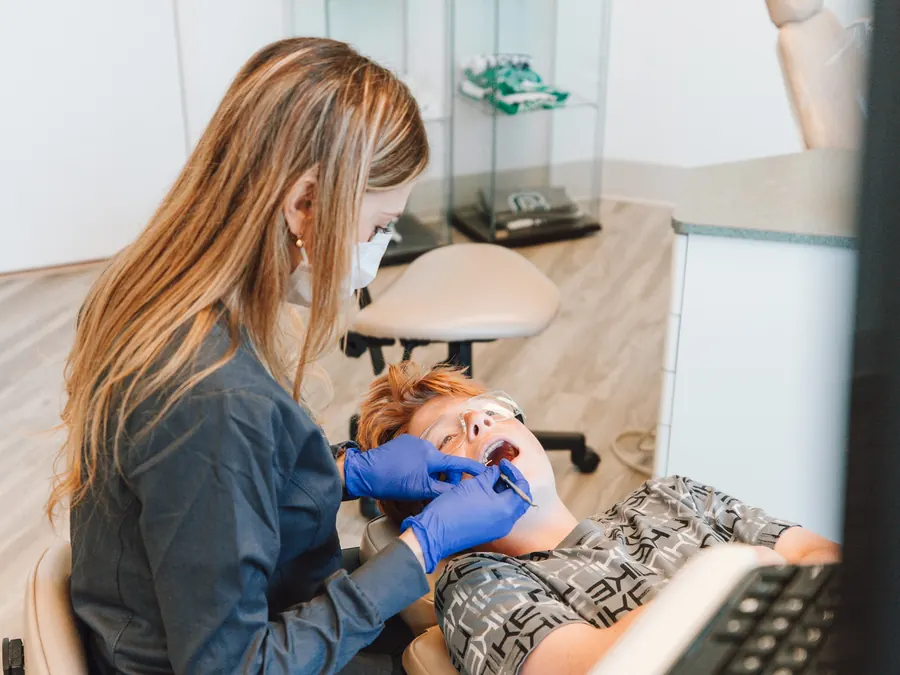
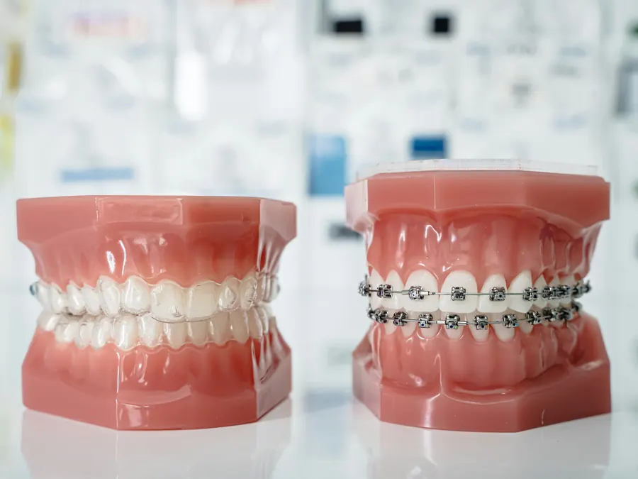
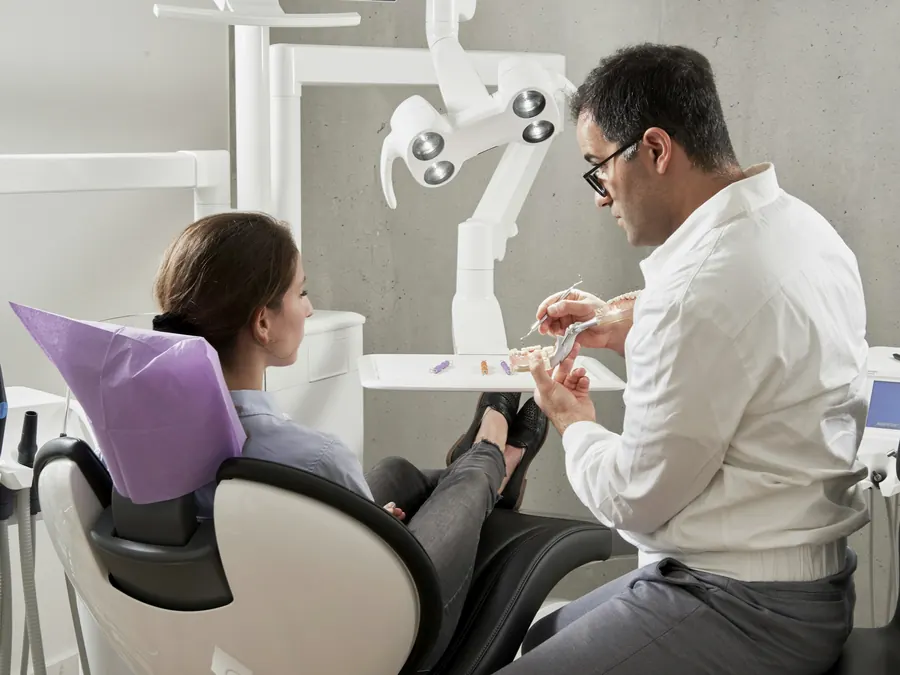
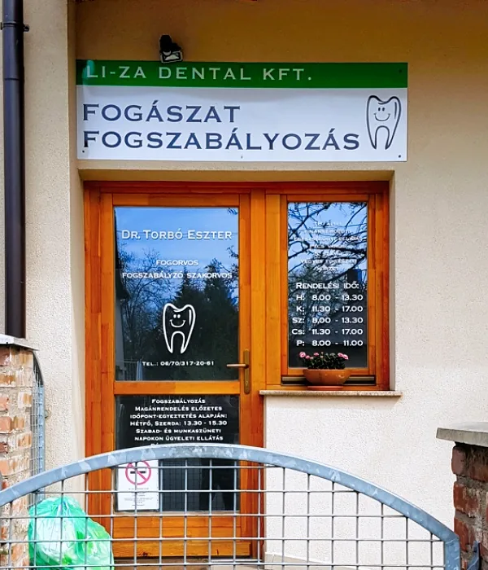

Fogászat gyerekeknek és felnőtteknek Pécsen
Dr. Torbó Eszter rendelője a Megyeri úton: körzeti fogászat és fogszabályozás egy helyen. A páciensek szerint kedves a doktornő, és szép, tiszta, modern a rendelő.
22 Google-vélemény
Fogászati rendelés
TB-s vegyes körzet: felnőttek és gyerekek
Rendelési idő
- Hétfő8:00–13:30
- Kedd11:30–17:00
- Szerda8:00–13:30
- Csütörtök11:30–17:00
- Péntek8:00–11:00
Szabad- és munkaszüneti napokon ügyeleti ellátás működik.
Fogszabályozás
Magánrendelés, előzetes időpont-egyeztetéssel
Hétfő és szerda 13:30–15:30
Gyerekeknek és felnőtteknek. Időpontot telefonon vagy visszahívás-kéréssel egyeztethet.
Konzultációt kérekMiben segíthetünk?
Válassza ki, mi a gond, és megmutatjuk, melyik rendelésre jöjjön, és mikor a legközelebbi alkalom.
Válasszon egyet:
Legközelebbi rendelés
Kezeléseink
Körzeti fogászati ellátás gyerekeknek és felnőtteknek, és fogszabályozás magánrendelésben.
Fogászati ellátás
- TömésSzuvas fogak ellátása fogszínű tömőanyaggal.
- GyökérkezelésA fájó, gyulladt fog megmentése.
- FoghúzásHa a fog már nem menthető, kíméletesen.
- Fogkő-eltávolításTisztítás, ami megvédi az ínyt.
- GyermekfogászatTejfogak és maradó fogak kezelése, türelemmel.
- FogpótlásKorona, híd vagy kivehető pótlás a hiányzó fogak helyére.
Fogszabályozás

Fogszabályozás gyerekeknek
A szülők szerint a doktornő minden alkalommal dicséri és biztatja a gyereket, hogy jól csinálja.

Fogszabályozás felnőtteknek
Felnőttként sem késő. Magánrendelés, előzetes egyeztetéssel, hétfőn és szerdán délután.

Az első vizsgálat
Sok fogszabályzó szakorvos 7 éves kor körül javasol egy első vizsgálatot, akkor is, ha nem lát semmi feltűnőt.

Dr. Torbó Eszter rendelője
Fogorvos és fogszabályzó szakorvos, a Semmelweis Egyetem Fogorvostudományi Karán végzett. Asszisztensével a Megyeri út 7. földszintjén várja a pácienseket.
A páciensek visszatérő szavai: kedves, mosolygós doktornő és asszisztens, szép, tiszta, modern rendelő, pontos és igényes munka.
- Földszintenkertkapus bejárat, a lépcső mellett rámpa
- Gyereknek, felnőttnekkörzeti fogászat és fogszabályozás
- Előre egyeztetvefogszabályozás hétfőn és szerdán
- Ünnepnaponügyeleti ellátás működik
Amit a páciensek írnak
22 Google-vélemény
„Mi a gyerekkel járunk fogszabályzásra, minden alkalommal dícséri, bíztatja, hogy jól csinálja, csak így tovább. Csak ajánlani tudom gyereknek, felnőttnek egyaránt.”
„Szépen felszerelt, modern hely. Mind a doktornő, mind az asszisztens rendkívül kedves és segítőkész. Pontos és igényes munkát végeznek.”
„Szép, kultúrált várótermi környezet. Kedves, aranyos doktornő fogadja a pácienseit.”
Gyakori kérdések
Ha nem találja a választ, hívjon: 06 70 317 2061.
Mikor van fogászati rendelés?
A rendelőben vegyes (felnőtt és gyermek) TB-s körzeti fogászati ellátás működik: hétfőn és szerdán 8:00–13:30, kedden és csütörtökön 11:30–17:00, pénteken 8:00–11:00.
Mikor van fogszabályozás?
A fogszabályozás magánrendelés, előzetes időpont-egyeztetés alapján hétfőn és szerdán 13:30 és 15:30 között. Időpontot a 06 70 317 2061-es számon vagy az oldal visszahívás-kérőjén kérhet.
Felnőttként is lehet fogszabályozásra jönni?
Igen. A rendelőbe gyerekek és felnőttek is járnak fogszabályozásra; a páciensek véleménye szerint is gyereknek és felnőttnek egyaránt ajánlják.
Mi a teendő hétvégén vagy ünnepnapon?
Szabad- és munkaszüneti napokon ügyeleti ellátás működik.
Akadálymentes a rendelő?
A rendelő földszinti, a kertkapun át közelíthető meg, és a lépcső mellett rámpa is van.
Hol van a rendelő?
Pécsen, a Megyeri út 7. szám alatt, földszinten. A bejárat fölött zöld-fehér tábla jelzi: Li-Za Dental Kft., fogászat, fogszabályozás.
Visszahívást kérek
Elég a neve és a telefonszáma: visszahívjuk, és egyeztetünk egy időpontot.
Fogászati rendelés: H, Sze 8:00–13:30 · K, Cs 11:30–17:00 · P 8:00–11:00.
Fogszabályozás: hétfő és szerda 13:30–15:30, előzetes egyeztetéssel.
Telefonon: 06 70 317 2061
Elérhetőség
A rendelő földszinti, a bejárat a kertkapun át nyílik.
- Cím
- 7623 Pécs, Megyeri út 7.
- Telefon
- 06 70 317 2061
- li.za.dental.kft@gmail.com
- Körzeti
- H, Sze 8:00–13:30 · K, Cs 11:30–17:00 · P 8:00–11:00
- Fogszabályozás
- H, Sze 13:30–15:30, előzetes egyeztetéssel